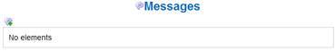

Sending messages |
The system supplies a small internal messages system that facilitates the customers of the application
to communicate in fast way among them and without the use of the email.
Communications of this kind consist of inner calls to the program and are not accessible as system messages
from external customers.
Every message is composed from at least three mandatory fields: an adressee (identified from the username),
a subject (title of the message) and a text.
Besides these data, it is possible to specify behaviors to add like the confirmation upon message reception,
the validity period (expressed in days)
and the message priority.
| Â | |
| The internal messages system does not mean to replace the traditional email. We only try to help users to exchage short messages among each other regarding documents in a fast and concise way. | |
For being able to send a message it is, in first place, necessary to know the exact username of the customer to contact.
In order to access the messages management main page, select it from the main
menu Personal --> Messages.
In order to create a new message, select the 3.1 icon.

After clicking, the lower form appears.
Picture 33: Create a message
The mandatory fields, as usual, are marked with an asterisk (*).
The Recipient field is mandatory and must have a value consisting of the customer username to which
the message is forwarded.
The Subject field is mandatory and must contain a highly summarized description on the argument of the
message.
The Confirmation check box lets you demand to the system that you want to be notified about the reading of
the message from the receiver.
In the lower part of the mask, a wide field of text lets you insert the body of the message.
Pressing the Save key, on the lower right side, the message becomes inserted into the system and the
customers will start seeing it visualized on the screen of messages management (Personal --> Messages).